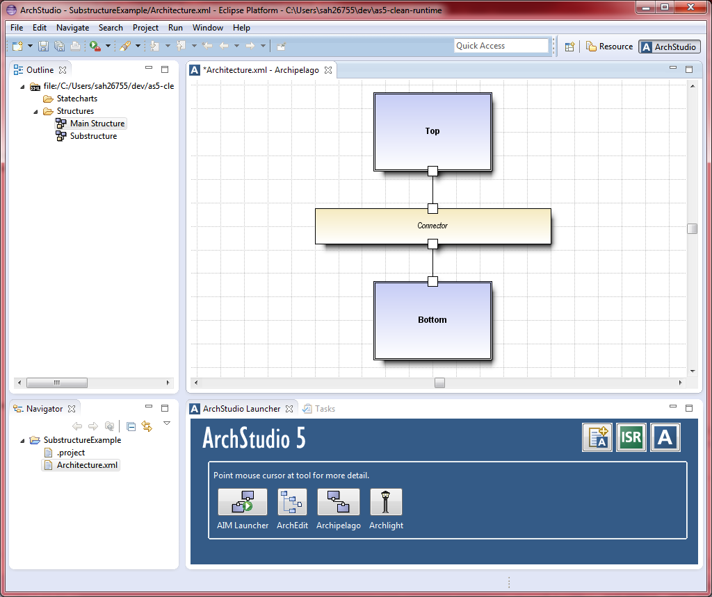
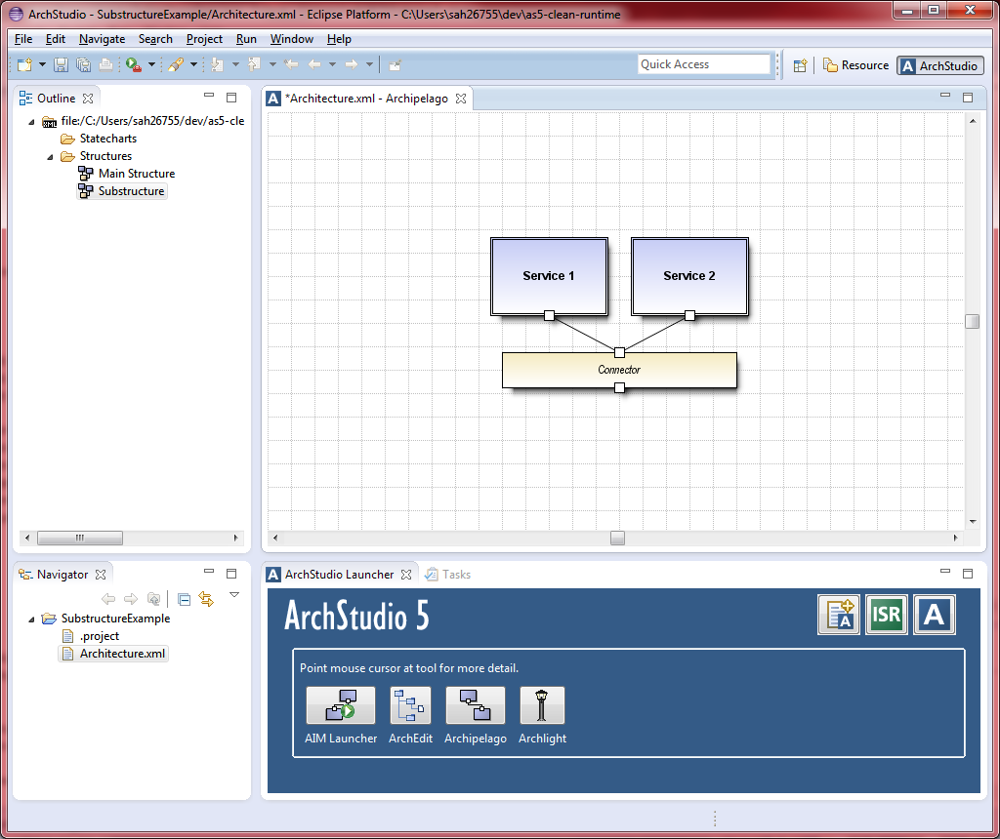
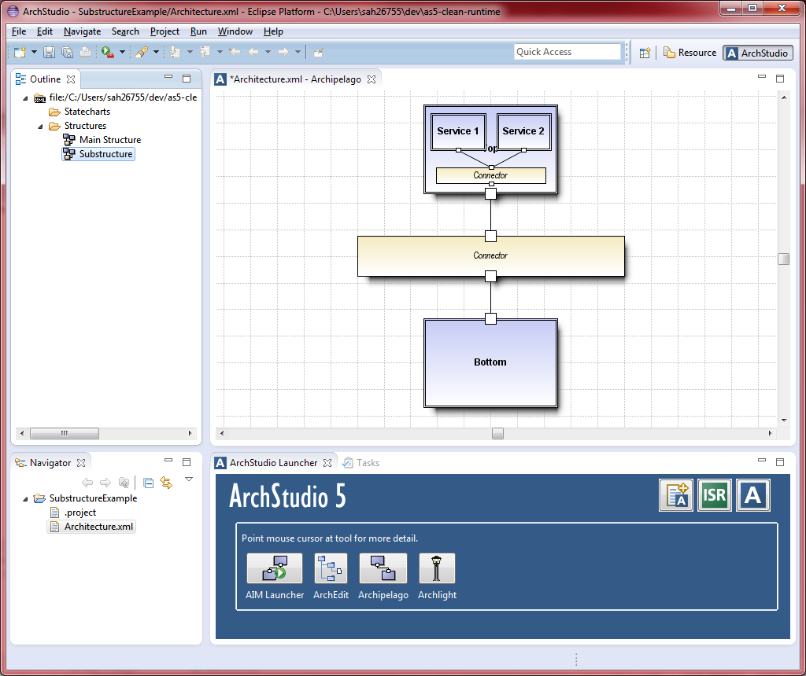
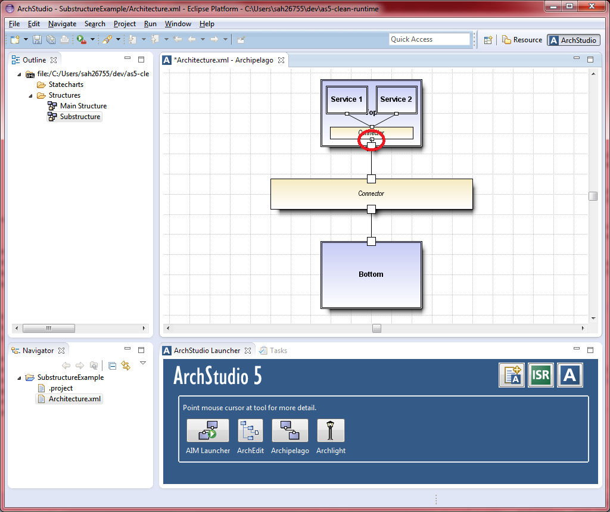

{kind=link}
{kind=link}

{kind=link}
{kind=link}
- Right-click on the interface of the outer component,
- Select "New Interface-Interface Mapping",
- Drag the blue line to the desired interface within the substructure, and
- Click on the substructure's interface.
ArchStudio supports the concept of hierarchical structures, i.e., where components and connectors have internal structures that define how they are constructed internally. Archipelago displays these structures directly in the graphical editor and allows them to be directly manipulated.
Unlike general graphical editing tools (like PowerPoint) where graphical objects are simply layered and dragged on top of each other, ArchStudio defines hierarchies through explicit substructures.
Below is an example of how to define and create a substructure.
|  | This shows the main structure of our example architecture in Archipelago. We will assign a substructure to the top component of this structure. Note that the structure is listed to the left, under the "Structures" node of the "Outline" view. |
|  | This shows the substructure of our example in Archipelago, the one that we will assign to the top component of the main structure. Note that this is an independent, first-class structure in and of itself. It is listed to the left under the "Structures" node of the "Outline" view as well. |
|
To assign the substructure to the top component of the main structure, we return to the main structure and drag the substructure from the outline view to the top component of the main structure. |
|  | Once assigned, Archipelago displays the substructure within the top component. The substructure can be directly manipulated from the main structure, or each structure can be independently edited by double clicking on it in the "Outline" view. |
|  | Finally, mappings from an interface on the outer component to an interface within the substructure can be created through context menus.
To do this:
|
Connectors can have substructures as well. These are assigned in the same way as components.